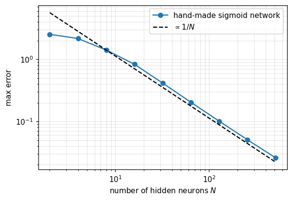
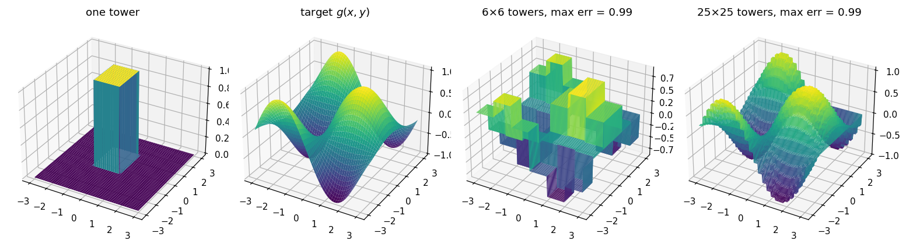

Lab 004 — Universal approximation from step functions
The claim
A neural network with one hidden layer and enough neurons can approximate any continuous function \(f:[a,b]\to\mathbb{R}\) as accurately as we like (Cybenko 1989, Hornik 1991). The idea behind the proof fits in one picture:
a single neuron with a steep sigmoid is (almost) a step function;
a sum of shifted and scaled steps is a staircase;
a staircase with enough steps follows any continuous curve as closely as we like.
This notebook builds each of these pieces in code, then compares the hand-made network with one trained by gradient descent.
The notebook runs in Google Colab without any installation: 1. Go to https://colab.research.google.com → File → Upload notebook. 2. Run cells one by one with Shift + Enter, in order. 3. The required packages (numpy, matplotlib, torch) are pre-installed in Colab.
Code
import numpy as npimport matplotlib.pyplot as pltimport torchimport torch.nn as nnimport ioimport ipywidgets as widgetsfrom IPython.display import displayplt.rcParams["figure.dpi"] =110torch.manual_seed(0)np.random.seed(0)def live_plot(draw, controls, layout=None):# Show sliders + a figure; redraw draw(**slider_values) whenever a slider moves.# The figure is sent as a PNG into an Image widget, which works in every Jupyter version and in Colab. img = widgets.Image(format="png")def update(change=None): fig = draw(**{k: c.value for k, c in controls.items()}) buf = io.BytesIO() fig.savefig(buf, format="png", bbox_inches="tight") plt.close(fig) img.value = buf.getvalue()for c in controls.values(): c.observe(update, names="value") update() display(widgets.VBox([layout or widgets.VBox(list(controls.values())), img]))
1. The target function
We pick a function with no special structure — a few wiggles and a trend:
Split \([a,b]\) into \(N\) intervals with points \(x_0 = a < x_1 < \dots < x_N = b\). Start at the value \(f(x_0)\), and at every point \(x_i\) add a step whose height is the change of \(f\) since the previous point:
Observations: - \(w\) too small: steps are blurred into each other, the network is too smooth. - \(w\) large: we recover the staircase. - There is a sweet spot — the sigmoid’s own smoothness interpolates between grid points better than a sharp jump.
Two sliders: the number of hidden neurons \(N\) and the common weight \(w\) (steepness). Left: every neuron’s contribution; right: their sum, which is the network output.
built from Θ step functions (switch to sigmoid with the toggle to compare).
The slider N sets the number of neurons; one row of sliders appears per neuron.
For neuron \(i\): weight \(w_i\) (steepness; negative = step down), bias \(b_i\) (the step sits at \(x = -b_i/w_i\)), output weight \(v_i\) (height).
With Θ only the sign of \(w_i\) (step up or down) and the location \(-b_i/w_i\) matter — the size of \(w_i\) is irrelevant. With the sigmoid, \(|w_i|\) also sets how sharp the step is.
The sliders start at the loss-minimising values for the current \(N\) and activation (and jump back there whenever \(N\) or the activation changes). Move any slider and watch the MSE rise above the optimum — the title shows by how many percent.
set to optimum goes back to the best parameters; set to staircase loads the uniform hand-made construction from above (compare its MSE with the optimum!); reset heights sets all \(v_i = 0\).
How the optimum is found: with Θ the network is piecewise constant with \(N\) jumps, and the best positions of the jumps are found exactly by dynamic programming (every piece takes the mean of \(f\) on it). For the sigmoid we start from that solution and refine all \(w_i, b_i, v_i\) with gradient descent (Adam).
Things to try: Which neuron hurts most when you move it? Is the loss more sensitive to the position \(-b_i/w_i\) or to the height \(v_i\)? How does the optimal MSE fall with \(N\)?
Code
N_MAX =20W_THETA =10.0# for Θ only sign(w) matters; any positive value works# ---------- loss-minimising parameters -------------------------------------------------x_fit = np.linspace(a, b, 600) # grid on which the MSE is minimisedy_fit = f(x_fit)def optimal_theta(N):# A Θ-network with N neurons is piecewise constant with N jumps. The best such function# (minimal MSE) is found exactly by dynamic programming over all positions of the jumps:# every piece takes the mean of f on it, and we pick the cut points with the smallest total error. n =len(y_fit) S1 = np.concatenate([[0], np.cumsum(y_fit)]) S2 = np.concatenate([[0], np.cumsum(y_fit**2)]) i, j = np.meshgrid(np.arange(n +1), np.arange(n +1), indexing="ij")with np.errstate(divide="ignore", invalid="ignore"): cost = S2[j] - S2[i] - (S1[j] - S1[i])**2/ (j - i) # squared error of one piece x_fit[i:j] cost[j <= i] = np.inf D, back = cost[0], [] # D[j] = best error of x_fit[:j] with k piecesfor k inrange(N): tot = D[:, None] + cost back.append(np.argmin(tot, axis=0)) D = np.min(tot, axis=0) cuts, j = [], n # backtrack the cut positionsfor k inreversed(range(N)): j = back[k][j]; cuts.append(j) cuts =sorted(cuts) edges = [0] + cuts + [n] means = [y_fit[p:q].mean() for p, q inzip(edges[:-1], edges[1:])] centers = [(x_fit[c -1] + x_fit[c]) /2for c in cuts]return [(W_THETA, -W_THETA * c, h) for c, h inzip(centers, np.diff(means))], means[0]def optimal_sigmoid(N, n_steps=1500):# start from the Θ optimum (steep sigmoids) and refine all parameters with Adam params, v0 = optimal_theta(N) w0 =2* N / (b - a) +1 W = torch.tensor([p[0] / W_THETA * w0 for p in params], requires_grad=True) B = torch.tensor([p[1] / W_THETA * w0 for p in params], requires_grad=True) V = torch.tensor([p[2] for p in params], requires_grad=True) V0 = torch.tensor(float(v0), requires_grad=True) xt_, yt_ = torch.tensor(x_fit), torch.tensor(y_fit) opt = torch.optim.Adam([W, B, V, V0], lr=0.02)for _ inrange(n_steps): loss = ((V0 + (V * torch.sigmoid(xt_[:, None] * W + B)).sum(1) - yt_)**2).mean() opt.zero_grad(); loss.backward(); opt.step()with torch.no_grad(): # keep the values inside the slider ranges W.clamp_(-30, 30); B.clamp_(-90, 90); V.clamp_(-5, 5); V0.clamp_(-4, 4)return [(w.item(), bb.item(), v.item()) for w, bb, v inzip(W, B, V)], V0.item()optimum_cache = {}def optimum(act_name, N):if (act_name, N) notin optimum_cache: optimum_cache[(act_name, N)] = optimal_theta(N) if act_name =="Θ step"else optimal_sigmoid(N)return optimum_cache[(act_name, N)]# ---------- widgets ---------------------------------------------------------------------def neuron_sliders(i):return {"w": widgets.FloatSlider(value=W_THETA, min=-30, max=30, step=0.01, description=f"w{i+1}"),"b": widgets.FloatSlider(value=0.0, min=-90, max=90, step=0.01, description=f"b{i+1}"),"v": widgets.FloatSlider(value=0.0, min=-5, max=5, step=0.01, description=f"v{i+1}")}neurons = [neuron_sliders(i) for i inrange(N_MAX)]rows = [widgets.HBox([n["w"], n["b"], n["v"]]) for n in neurons]slider_N = widgets.IntSlider(value=4, min=1, max=N_MAX, description="neurons N", continuous_update=False)slider_v0 = widgets.FloatSlider(value=0.0, min=-4, max=4, step=0.01, description="offset v0")activation = widgets.ToggleButtons(options=["Θ step", "sigmoid"], value="Θ step", description="activation")btn_opt = widgets.Button(description="set to optimum", button_style="success")btn_stair = widgets.Button(description="set to staircase")btn_reset = widgets.Button(description="reset heights")rows_box = widgets.VBox()img = widgets.Image(format="png")paused =False# avoids redrawing 3N times when a button sets many slidersdef act_fn():return theta if activation.value =="Θ step"else sigmoiddef network(params, v0, act):return v0 +sum(v * act(w * x + bb) for w, bb, v in params)def redraw(change=None):if paused:return N = slider_N.value act = act_fn() sym ="\\Theta"if activation.value =="Θ step"else"\\sigma" params = [tuple(neurons[i][k].value for k in"wbv") for i inrange(N)] y = network(params, slider_v0.value, act) mse = np.mean((f(x) - y)**2) mse_opt = np.mean((f(x) - network(*optimum(activation.value, N), act))**2) fig, axes = plt.subplots(1, 2, figsize=(13, 3.8))for i, (w_i, b_i, v_i) inenumerate(params): loc =-b_i / w_i if w_i !=0else np.nan axes[0].plot(x, v_i * act(w_i * x + b_i), label=f"neuron {i+1}: step at x = {loc:.2f}") axes[0].set_title(f"individual neurons $v_i\\,{sym}(w_i x + b_i)$"); axes[0].grid(alpha=0.3)if N <=8: axes[0].legend(fontsize=8) axes[1].plot(x, f(x), "k", lw=2, alpha=0.4, label="$f$") axes[1].plot(x, y, "C2", lw=2, label=f"your network ({N} neurons)") axes[1].set_title(f"MSE = {mse:.4f} (optimum {mse_opt:.4f}, +{100* (mse / mse_opt -1):.1f}%)") axes[1].set_ylim(-2, 4.5); axes[1].legend(); axes[1].grid(alpha=0.3) fig.tight_layout() buf = io.BytesIO(); fig.savefig(buf, format="png", bbox_inches="tight"); plt.close(fig) img.value = buf.getvalue()def set_many(values, v0):global paused paused =Truefor i, (w_i, b_i, v_i) inenumerate(values): neurons[i]["w"].value, neurons[i]["b"].value, neurons[i]["v"].value = w_i, b_i, v_i slider_v0.value = v0 paused =False redraw()def on_optimum(_=None): set_many(*optimum(activation.value, slider_N.value))def on_N(change): rows_box.children = rows[:slider_N.value] on_optimum() # new N -> start again from the optimumdef on_staircase(_): N = slider_N.value nodes = np.linspace(a, b, N +1) w =min(2* N / (b - a), 30) set_many([(w, -w * c, h) for c, h inzip(nodes[1:], np.diff(f(nodes)))], f(nodes[0]))def on_reset(_): set_many([(n["w"].value, n["b"].value, 0.0) for n in neurons[:slider_N.value]], 0.0)slider_N.observe(on_N, names="value")activation.observe(on_optimum, names="value")slider_v0.observe(redraw, names="value")for n in neurons:for s in n.values(): s.observe(redraw, names="value")btn_opt.on_click(on_optimum)btn_stair.on_click(on_staircase)btn_reset.on_click(on_reset)rows_box.children = rows[:slider_N.value]on_optimum()display(widgets.VBox([activation, widgets.HBox([slider_N, slider_v0]), widgets.HBox([btn_opt, btn_stair, btn_reset]), rows_box, img]))
Error vs number of neurons
For a fair comparison the steepness has to grow with \(N\) (the steps get narrower): we take \(w = 2N/(b-a)\), i.e. every sigmoid rises over about one grid spacing.
Code
Ns = [2, 4, 8, 16, 32, 64, 128, 256, 512]err_net = []for N in Ns: w =2* N / (b - a) err_net.append(np.max(np.abs(f(x) - evaluate(handmade_network(N, w), x))))plt.figure(figsize=(6, 4))plt.loglog(Ns, err_net, "o-", label="hand-made sigmoid network")plt.loglog(Ns, err_net[2] * Ns[2] / np.array(Ns), "k--", label=r"$\propto 1/N$")plt.xlabel("number of hidden neurons $N$"); plt.ylabel("max error")plt.legend(); plt.grid(alpha=0.3, which="both"); plt.show()

5. Hand-made vs trained
The construction above proves that a good set of weights exists. It says nothing about whether gradient descent finds it. Let us train the same architecture from a random initialisation, using only samples of \(f\), and compare.
What does the trained network do with its neurons? It is not restricted to equal spacing, equal steepness, or the heights \(f(x_i)-f(x_{i-1})\). Each neuron’s step location is \(c_i = -b_i / w_i\) — let us see where training put them.
Code
W = net_trained[0].weight.detach().squeeze().numpy()B = net_trained[0].bias.detach().numpy()centers =-B / Wwith torch.no_grad(): contrib = net_trained[1](net_trained[0](xt)).numpy() * net_trained[2].weight.numpy()fig, ax = plt.subplots(figsize=(8, 4))for i inrange(N): ax.plot(x, contrib[:, i], lw=1)ax.plot(x, f(x), "k", lw=2, alpha=0.4, label="$f$")ax.scatter(centers[(centers > a) & (centers < b)], np.zeros(np.sum((centers > a) & (centers < b))), marker="|", s=300, c="k", label="step locations $-b_i/w_i$")ax.set_xlim(a, b); ax.set_title("Neurons of the trained network"); ax.legend(); ax.grid(alpha=0.3)plt.show()print("steepness |w_i| :", np.round(np.sort(np.abs(W)), 2))
The trained neurons are placed and shaped adaptively: more of them where \(f\) curves strongly, with different steepnesses, and some may sit outside \([a,b]\) and act as smooth trends. That is why a trained network typically needs far fewer neurons than the uniform staircase for the same accuracy.
6. Bonus: two dimensions need a second layer of steps
In 2D the analogue of a bump is a tower: a block of height \(h\) over a rectangle \([c_1,c_2)\times[d_1,d_2)\). Four steps (two in \(x\), two in \(y\)) add up to 4 only inside the rectangle; a second step with threshold \(3.5\) keeps exactly that region:
(the \(+2\) accounts for the two negative steps being \(-1\) outside — inside the rectangle the sum is \(1+0+1+0+2 = 4\)). A sum of towers on a grid approximates any \(f(x,y)\) — this is a network with two hidden layers of step neurons.
Code
def tower(X, Y, c1, c2, d1, d2): s = theta(X - c1) - theta(X - c2) + theta(Y - d1) - theta(Y - d2) +2return theta(s -3.5)def g(X, Y):return np.sin(X) * np.cos(Y) +0.3* np.exp(-(X**2+ Y**2))L =3.0xs = np.linspace(-L, L, 200)X, Y = np.meshgrid(xs, xs)def tower_approx(X, Y, n): edges = np.linspace(-L, L, n +1) mids =0.5* (edges[1:] + edges[:-1]) out = np.zeros_like(X)for i inrange(n):for j inrange(n): out += g(mids[i], mids[j]) * tower(X, Y, edges[i], edges[i+1], edges[j], edges[j+1])return outfig = plt.figure(figsize=(14, 4))ax = fig.add_subplot(1, 4, 1, projection="3d")ax.plot_surface(X, Y, tower(X, Y, -1, 0.5, -0.5, 1.5), cmap="viridis", rstride=4, cstride=4)ax.set_title("one tower")ax = fig.add_subplot(1, 4, 2, projection="3d")ax.plot_surface(X, Y, g(X, Y), cmap="viridis", rstride=4, cstride=4)ax.set_title("target $g(x,y)$")for k, n inenumerate([6, 25]): ax = fig.add_subplot(1, 4, 3+ k, projection="3d") Z = tower_approx(X, Y, n) ax.plot_surface(X, Y, Z, cmap="viridis", rstride=2, cstride=2) ax.set_title(f"{n}×{n} towers, max err = {np.max(np.abs(Z - g(X, Y))):.2f}")plt.tight_layout(); plt.show()

The price: \(n\) towers per dimension in \(d\) dimensions means \(n^d\) towers — the curse of dimensionality for this naive construction. Real networks on real data do far better than this worst-case count, because they learn where to put their neurons (Section 5) and because real data have structure.
Summary
One neuron with a steep sigmoid ≈ one step: bias = location, weight = sharpness, output weight = height.
A sum of \(N\) steps reproduces \(f\) with error \(\propto 1/N\) — no limit on accuracy.
Therefore a single hidden layer is in principle enough (universal approximation theorem).
The theorem guarantees existence, not efficiency or trainability: gradient descent finds different, adaptive solutions.
In \(d\) dimensions the naive construction needs \(\sim n^d\) neurons.
Exercises
Replace \(f\) by \(|x|\), by a function with a jump (e.g. np.sign(x)), and by \(\sin(10x)\). Which needs the most steps, and why?
Replace the sigmoid with nn.ReLU(). Show that \(\text{ReLU}(x - c_1) - \text{ReLU}(x - c_2)\) is a ramp, and build a piecewise-linear interpolant of \(f\) by hand. How does its error scale with \(N\)?
Repeat Section 5 for \(N = 4, 8, 32, 64\) and plot the max error of the trained and hand-made networks on the same log-log plot.
Evaluate the trained network on \(x\in[-5,5]\) (outside the training interval). What happens, and why does the construction give no guarantee there?